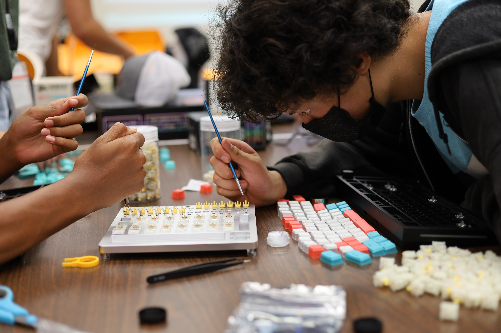
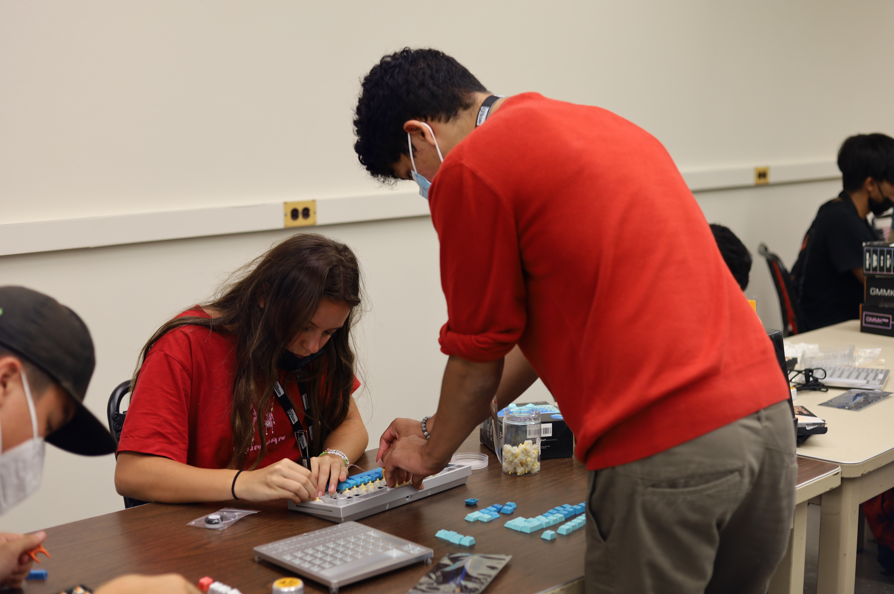

 
Summer Series got young Hawaiians and flew them over to the campus of UH Manoa to put them through a 2-week excursion where they sharpened their skills in the field they selected. Alongside the Engineering & Comp Sci fields, there were also musical, and health fields. Our class which had around 10 students per session went through a lesson plan that my partner Briana Lee and I created including the construction of their keyboards. The summer series is held over two sessions with the first being around middle-school students and the second being around high-school students. The first session was lucky enough to be able to even build their computers.
The full curriculum varied based on budgeting but some memorable events and opportunities we manage to secure included a tour of OceanIT HQ which showcased a variety of new and upcoming high-end technology many of which were for the betterment of our communities. We also brought the students to the Data Center on UH Manoa as well as had them be able to listen to the head of security of all UH Campuses Jodi Ito. We built computers, keyboards, structures in VR, Mini-Speaker kits, and more. It was an amazing experience to be a part of and something I hold in high regard considering the workload needed to pull it off. The program was sponsored by NHS with the Engineering Field, in particular, sponsored by NHSEMP which are very amazing programs that contribute heavily to the community.
Here is a quick video and a link to a news article about the program.
Students showing off their (keyboards!)[https://drive.google.com/file/d/14JylKTafSw6j4zmPI9gelAuPehJnMUUQ/view?usp=sharing]
Read about it with this (Summer Series News Article!)[https://www.hawaii.edu/news/2022/06/28/native-hawaiian-high-schoolers-immersed-in-science/]